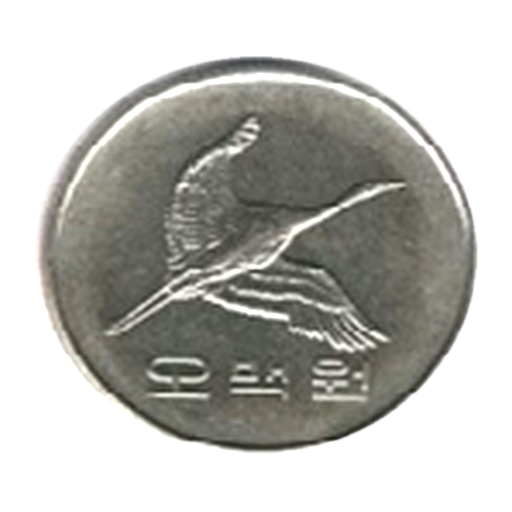

COIN SELECTOR
주화 종류 선택
확인하고 싶은 액면가를 선택하세요.
1966년–2026년

YEARLY MINTAGE
500원 주화 발행량
학 도안 · 연도별 발행 수량
발행량 색상 범례발행 수량이 적을수록 희소 구간 색상으로 표시
| 발행 연도 | 발행량 | 구분 |
|---|
자료 이용 안내
이 웹사이트의 연도별 발행량은 한국은행의 공식 통계와 전수 대조가 완료된 자료가 아니므로, 연구·거래·감정의 확정 근거로 사용하기 전에 원자료 확인이 필요합니다.
‘미발행’은 제공된 표에 미발행으로 표시된 항목이며, ‘자료 확인 중’은 값이 확인되지 않은 경우를 뜻합니다. 2026년 수량은 추정치로 표시합니다.